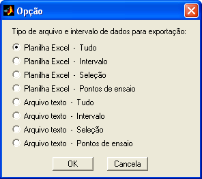
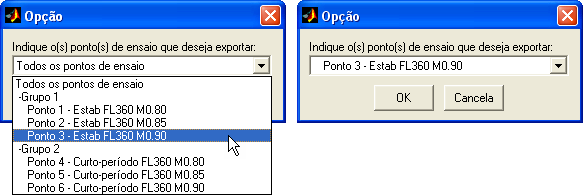
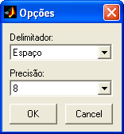
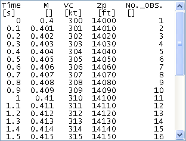

| Menu Arquivo |
  |
Exportar
Dados
O R_DAT pode
exportar os dados em uso (ou parte deles) para
arquivos com formato externo Planilha Excel (xls)
ou
texto ASCII (txt).
Clique no menu “Arquivo ►
Exportar dados ... ► [intervalo desejado] ► [formato desejado]” ou
no botão  na
Barra de Ferramentas e escolha a opção
desejada:
na
Barra de Ferramentas e escolha a opção
desejada:

Intervalo
Desejado
O intervalo de interesse para exportação pode ser:
|
Coluna |
Descrição |
|
Tudo |
Todo o arquivo. |
|
Intervalo |
Apenas o
intervalo selecionado (trecho limitado pelas bordas do gráfico). |
|
Seleção |
Apenas os
pontos selecionados (marcados por círculos vermelhos no gráfico). |
|
Pontos de ensaio |
Um grupo, todos
ou apenas um dos os intervalos definidos como pontos de ensaios
(marcados por setas azuis no gráfico). |
Os pontos
desejados podem ser
selecionados pelas funções de seleção/desseleção
de
pontos do menu “Dados”.
Ao selecionar a
opção “Pontos de
ensaio”, é necessário indicar o grupo ou ponto a ser exportado.
Selecione a
opção desejada na lista e clique ”OK”.

Caso sejam
escolhidas as opções
“Todos os pontos de ensaio” ou “Grupo”, os intervalos relevantes serão
unidos
cronologicamente. Caso haja intervalos superpostos não haverá repetição
de
dados.
Formato
Desejado
Os formatos
disponíveis para
exportação são:
-
Planilha Excel (.xls);
-
Arquivo de texto
(.txt).
No caso de
exportação para arquivo texto, o R_DAT irá
questionar o tipo de delimitador e a precisão dos dados. As opções são:
- Delimitadores:
Espaço, Tabulação, Vírgula e Ponto-e-vírgula;
- Precisão: de
|
Nota: Caso existam,
nos nomes de parâmetros e unidades, ocorrências do caractere
delimitador escolhido, os mesmos serão convertidos em sublinhado (“_”)
para evitar que sejam confundidos com os delimitadores. |

Exemplo
No exemplo
abaixo, a opção “Tudo ...”
exportará todo o arquivo, independentemente do intervalo selecionado, a
opção
“Intervalo ...” exportará o intervalo compreendido entre as observações
820 e
920 (inclusive), a opção “Seleção ...” exportará as 60 observações
selecionadas
(não há necessidade de serem contíguas) e a opção “Pontos e ensaio”
exportará as
observações compreendidas entre as setas azuis, caso seja selecionado o
ponto
de ensaio número 2.
|
Nota: Caso o
intervalo de interesse esteja vazio, o R_DAT não realizará a respectiva
operação. |

O R_DAT
exportará o trecho de interesse da matriz DADOS e a
matriz PARAM no mesmo formato previsto para importação de dados de planilha
Excel
e arquivo
de
texto:
Planilha Excel:

|
Nota: O programa MS
Excel é limitado a 65.536 linhas e 256 colunas por planilha. Caso o
número de observações (mais duas linhas de cabeçalho) ou o número de
parâmetros seja superior ao limite do Excel, a exportação não será
possível. |
Arquivo texto:

|
Nota: Caso a
quantidade de dados seja muito grande, a exportação para o formato
texto pode levar vários minutos e consumir todos os recursos do
computador. O R_DAT emitirá um aviso caso o número de elementos a serem
exportados seja maior que 100.000 e um alerta caso seja maior que
500.000. |
| |
Salvar
arquivo mat parcial |
Arquivo
temporário |
|